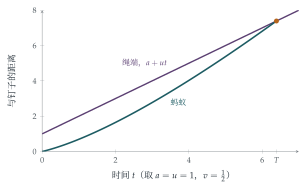

STEP II 2018，第 10 题
继续之前，请先阅读题目（原题为英文）。题目载于 STEP Support Programme 的题目资料库： step.maths.org/questions/18-s2-q10
引子
一只蚂蚁沿着一条长一公里的橡皮绳出发，每秒走一厘米。每过一秒，绳子都会均匀地再拉长一公里。绳的远端以每秒一千米的速度飞驰而去，比蚂蚁快十万倍。蚂蚁最终能走到绳的尽头吗？
令人惊讶的是，答案是能。绳子拉伸时会带着蚂蚁一起前进；虽然蚂蚁每次走过的路程占绳长的比例愈来愈小，但这些比例加起来就像调和级数（harmonic series），而调和级数是发散（diverge）的（第 2.3 节）。蚂蚁终会到达，只是所需的时间远远超过宇宙的年龄。本题精确地解出这个问题的连续版本，并发现所需时间随两个速率之比呈指数增长。
动笔之前
绳子是均匀拉伸的：每一小段都按相同的倍数伸长。在时间 \(t\)，绳长为 \(a + ut\)。若距离钉子 \(x\) 的一点位于全长的 \(\frac{x}{a + ut}\) 处，这一点移动得有多快？
绳上每一点所占全长的比例 \(f\) 保持不变，所以它与钉子的距离是 \(f(a + ut)\)，速率是 \(fu = \frac{ux}{a + ut}\)。靠近钉子的点几乎不动；远端则以 \(u\) 的速率移动。
逐步解题
阶段 1 蚂蚁的方程
蚂蚁相对于绳子的速率是 \(v\)，还要加上牠脚下那段绳子的速率： \[\frac{\mathrm{d}x}{\mathrm{d}t} = v + \frac{ux}{a + ut}.\]
用商法则（quotient rule）对 \(\frac{x}{a + ut}\) 求导，并代入 \(\dot x\) 的方程。
\[\frac{\mathrm{d}}{\mathrm{d}t}\Bigl(\frac{x}{a + ut}\Bigr) = \frac{\dot x}{a + ut} - \frac{ux}{(a + ut)^2} = \frac{1}{a + ut}\Bigl(v + \frac{ux}{a + ut}\Bigr) - \frac{ux}{(a + ut)^2} = \frac{v}{a + ut}. \qed\] 蚂蚁已走过的绳长比例以 \(\frac{v}{a + ut}\) 的速率增加：即牠自身的速率除以当时的绳长。拉伸的影响完全消失了，因为拉伸不会改变任何一点所占的比例。
阶段 2 到达尽头
由 \(0\) 积分至 \(t\)。比例何时达到 \(1\)？
蚂蚁从钉子出发，所以 \[\frac{x}{a + ut} = \int_0^t\frac{v\,\mathrm{d}s}{a + us} = \frac vu\ln\frac{a + ut}{a}.\] 当比例等于 \(1\) 时，蚂蚁到达尽头：\(\ln\frac{a + uT}{a} = \frac uv = k\)，所以 \(a + uT = ae^k\)，即 \[uT = a(e^k - 1). \qed\] 对数可以无限增大，所以无论绳子拉得多快，蚂蚁总会到达。
阶段 3 回程
往回走时，蚂蚁相对于绳子的速度是 \(-v\)。现在牠所占比例的变化率是多少？牠在时间 \(T\) 由比例 \(1\) 出发。
以 \(-v\) 重复同样的计算，得 \(\frac{\mathrm{d}}{\mathrm{d}t}\bigl(\frac{x}{a + ut}\bigr) = -\frac{v}{a + ut}\)，所以 \[\frac{x}{a + ut} = 1 - \frac vu\ln\frac{a + ut}{a + uT}.\] 当 \(a + ut = (a + uT)e^k\) 时，比例降至 \(0\)。由于 \(a + uT = ae^k\)，回程所需时间为 \[t - T = \frac{(a + uT)(e^k - 1)}{u} = \frac{ae^k\cdot uT/a}{u} = Te^k. \qed\] 回程所需的时间是去程的 \(e^k\) 倍：蚂蚁掉头的时候，绳子已是开始时的 \(e^k\) 倍长。

回顾
选对变量。已走过的绳长比例是最自然的量：拉伸不会改变它。
乔装了的积分因子（integrating factor）。乘以 \(\frac{1}{a + ut}\) 之后，一条线性微分方程（linear differential equation）就变成了一个恰好的导数。
发散胜过速度。比例像对数一样增长，而对数是无界的，所以蚂蚁总会到达。
背后的数学
调和级数的版本
这个谜题通常是以离散的拉伸来叙述的。一条绳长 \(1\) 公里；蚂蚁在第一秒走 \(1\) 厘米；然后绳子拉长 \(1\) 公里；然后蚂蚁再走一厘米，如此类推。在第 \(n\) 秒，蚂蚁在长 \(n\) 公里的绳上走了 \(1\) 厘米：所占比例为 \(\frac{1}{100\,000\,n}\)。拉伸不会改变牠所占的比例，所以 \(N\) 秒之后，牠已走过绳子的 \[\frac{1}{100\,000}\Bigl(1 + \frac12 + \frac13 + \cdots + \frac1N\Bigr) \approx \frac{\ln N + 0.577}{100\,000}\] 。当 \(H_N \approx 100\,000\) 时牠便到达，那大约是 \(e^{100\,000}\) 秒之后，这个数有超过 \(43\,000\) 位数字。（作为比较，宇宙的年龄约为 \(4 \times 10^{17}\) 秒。）我们的连续版答案与此吻合：\(k = \frac uv = 100\,000\)，而 \(T \approx \frac aue^k\)。
膨胀宇宙中的光
绳上的蚂蚁，正是光穿越膨胀宇宙的一个模型。遥远的星系被空间本身的膨胀带着远离我们，而它们发出的光则以速率 \(c\) 在膨胀的空间之中向我们传播，就像蚂蚁沿着拉伸中的绳子行走一样。遥远星系的光最终能否到达我们这里，取决于膨胀率如何随时间变化。在一个以稳定速率膨胀的宇宙中，就像那条绳子一样，光最终总会到达。而在一个加速膨胀的宇宙中（我们的宇宙看来正是如此），有些星系的光永远不会到达我们这里：这就是宇宙事件视界（cosmic event horizon）。对蚂蚁来说，相应的情况是一条按指数拉伸的绳子，绳端的速率与绳长成正比地增长（可在练习中试试）。
这个谜题似乎是法国数学家 Denys Wilquin 在 1972 年发明的，当时说的是橡皮筋上的一条虫；其后马丁·加德纳（Martin Gardner）在他的 Scientific American 专栏和著作 Time Travel and Other Mathematical Bewilderments 中介绍，令它广为人知。它是最著名的例子之一：结果违反直觉，却又容易证明；它也是人们说明调和级数发散时最爱用的例子。
思维技巧
当问题中某个部分改变了一切（这里是拉伸），就去找一个它不会改变的量。
拉伸会改变每一段距离，却不改变任何比例。改用比例来处理，拉伸就从问题中消失了。在大学里，这个想法会以宇宙学和流体力学中的共动坐标（comoving coordinates）的形式出现，更一般地说，就是寻找在某个变换下的不变量（invariant）。
延伸练习
中途。蚂蚁何时走到绳子的一半？那是在时间 \(\frac T2\) 之前还是之后？
指数拉伸。假设绳长改为 \(ae^{\lambda t}\)。证明蚂蚁仅当 \(v > \lambda a\) 时才能到达尽头。（这就是宇宙事件视界。）
加速的绳子。若绳长为 \(a + \frac12bt^2\)，蚂蚁是否总能到达？
离散的谜题。在离散版本中，蚂蚁需要多少秒才能走过绳子的 \(1\%\)？请使用 \(H_N \approx \ln N + 0.577\)。
延伸阅读
Martin Gardner, Time Travel and Other Mathematical Bewilderments（W. H. Freeman）。书中收录了橡皮绳上的蚂蚁。
Julian Havil, Gamma: Exploring Euler’s Constant（Princeton University Press）。调和级数，以及这只蚂蚁。
Barbara Ryden, Introduction to Cosmology（Cambridge University Press）。膨胀的空间、视界与共动坐标，属大学本科程度。